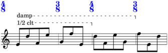
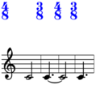
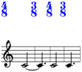
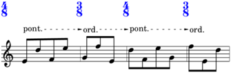
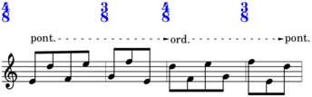
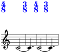

LibraryTZ¶
-
class
baca.LibraryTZ.LibraryTZ¶ Library T - Z.
>>> from abjad import rhythmmakertools as rhythmos
Special methods
-
(AbjadObject).__format__(format_specification='')¶ Formats Abjad object.
Set format_specification to ‘’ or ‘storage’. Interprets ‘’ equal to ‘storage’.
Returns string.
-
(AbjadObject).__repr__()¶ Gets interpreter representation of Abjad object.
Returns string.
Class & static methods
-
static
tag(tags, command, deactivate=None, tag_measure_number=None)¶ Appends each tag in
tagstocommand.Sorts
commandtags.Returns
commandfor in-place definition file application.Return type: Command
-
static
tenuto(selector='baca.phead(0)')¶ Attaches tenuto.
Attaches tenuto to pitched head 0:
>>> music_maker = baca.MusicMaker() >>> contribution = music_maker( ... 'Voice 1', ... [[0, 2, 10], [18, 16, 15, 20, 19], [9]], ... baca.rests_around([2], [4]), ... baca.tenuto(), ... baca.tuplet_bracket_staff_padding(5), ... counts=[1, 1, 5, -1], ... time_treatments=[-1], ... ) >>> lilypond_file = music_maker.show(contribution) >>> abjad.show(lilypond_file, strict=89)
Attaches tenuto to pitched heads in tuplet 1:
>>> music_maker = baca.MusicMaker() >>> contribution = music_maker( ... 'Voice 1', ... [[0, 2, 10], [18, 16, 15, 20, 19], [9]], ... baca.map( ... baca.tenuto(baca.pheads()), ... baca.tuplet(1), ... ), ... baca.rests_around([2], [4]), ... baca.tuplet_bracket_staff_padding(5), ... counts=[1, 1, 5, -1], ... time_treatments=[-1], ... ) >>> lilypond_file = music_maker.show(contribution) >>> abjad.show(lilypond_file, strict=89)
Return type: IndicatorCommand
-
static
text_script_color(color='red', selector='baca.leaves()', allow_mmrests=False)¶ Overrides text script color.
Overrides text script color on all leaves:
>>> music_maker = baca.MusicMaker() >>> contribution = music_maker( ... 'Voice 1', ... [[0, 2, 10], [18, 16, 15, 20, 19], [9]], ... baca.markup('più mosso'), ... baca.markup( ... 'lo stesso tempo', ... baca.tuplets()[1:2].phead(0), ... ), ... baca.rests_around([2], [4]), ... baca.text_script_color('red'), ... baca.tuplet_bracket_staff_padding(5), ... counts=[1, 1, 5, -1], ... time_treatments=[-1], ... ) >>> lilypond_file = music_maker.show(contribution) >>> abjad.show(lilypond_file, strict=89)
Overrides text script color on leaves in tuplet 1:
>>> music_maker = baca.MusicMaker() >>> contribution = music_maker( ... 'Voice 1', ... [[0, 2, 10], [18, 16, 15, 20, 19], [9]], ... baca.markup('più mosso'), ... baca.markup( ... 'lo stesso tempo', ... baca.tuplets()[1:2].phead(0), ... ), ... baca.rests_around([2], [4]), ... baca.map(baca.text_script_color('red'), baca.tuplet(1)), ... baca.tuplet_bracket_staff_padding(5), ... counts=[1, 1, 5, -1], ... time_treatments=[-1], ... ) >>> lilypond_file = music_maker.show(contribution) >>> abjad.show(lilypond_file, strict=89)
Raises exception when called on multimeasure rests:
>>> maker = baca.SegmentMaker( ... score_template=baca.SingleStaffScoreTemplate(), ... time_signatures=[(4, 8), (3, 8), (4, 8), (3, 8)], ... )
>>> maker( ... 'MusicVoice', ... baca.markup.boxed('still', selector=baca.leaf(1)), ... baca.text_script_color('red'), ... )
>>> lilypond_file = maker.run(environment='docs') Interpreting ... baca.CommandWrapper( command=baca.OverrideCommand( attribute='color', blacklist=( abjad.MultimeasureRest, ), grob='text_script', selector=baca.leaves(), tags=[], value='red', ), scope=baca.Scope( stages=(1, -1), voice_name='MusicVoice', ), ) Traceback (most recent call last): File "<stdin>", line 1, in <module> File "/Users/trevorbaca/baca/baca/SegmentMaker.py", line 6024, in run command_count = self._call_commands() File "/Users/trevorbaca/baca/baca/SegmentMaker.py", line 1504, in _call_commands wrapper.command(selection) File "/Users/trevorbaca/baca/baca/OverrideCommand.py", line 266, in __call__ raise Exception(message) Exception: MultimeasureRest is forbidden.
Return type: OverrideCommand
-
static
text_script_down(selector='baca.leaves()', allow_mmrests=False)¶ Overrides text script direction.
Down-overrides text script direction on leaves:
>>> music_maker = baca.MusicMaker() >>> contribution = music_maker( ... 'Voice 1', ... [[0, 2, 10], [18, 16, 15, 20, 19], [9]], ... baca.markup('più mosso'), ... baca.markup( ... 'lo stesso tempo', ... baca.tuplets()[1:2].phead(0), ... ), ... baca.rests_around([2], [4]), ... baca.text_script_down(), ... baca.tuplet_bracket_staff_padding(5), ... counts=[1, 1, 5, -1], ... time_treatments=[-1], ... ) >>> lilypond_file = music_maker.show(contribution) >>> abjad.show(lilypond_file, strict=89)
Down-overrides text script direction on leaves in tuplet 1:
>>> music_maker = baca.MusicMaker() >>> contribution = music_maker( ... 'Voice 1', ... [[0, 2, 10], [18, 16, 15, 20, 19], [9]], ... baca.markup('più mosso'), ... baca.markup( ... 'lo stesso tempo', ... baca.tuplets()[1:2].phead(0), ... ), ... baca.rests_around([2], [4]), ... baca.map(baca.text_script_down(), baca.tuplet(1)), ... baca.tuplet_bracket_staff_padding(5), ... counts=[1, 1, 5, -1], ... time_treatments=[-1], ... ) >>> lilypond_file = music_maker.show(contribution) >>> abjad.show(lilypond_file, strict=89)
Raises exception when called on multimeasure rests:
>>> maker = baca.SegmentMaker( ... score_template=baca.SingleStaffScoreTemplate(), ... time_signatures=[(4, 8), (3, 8), (4, 8), (3, 8)], ... )
>>> maker( ... 'MusicVoice', ... baca.markup.boxed('still', selector=baca.leaf(1)), ... baca.text_script_down() ... )
>>> lilypond_file = maker.run(environment='docs') Interpreting ... baca.CommandWrapper( command=baca.OverrideCommand( attribute='direction', blacklist=( abjad.MultimeasureRest, ), grob='text_script', selector=baca.leaves(), tags=[], value=Down, ), scope=baca.Scope( stages=(1, -1), voice_name='MusicVoice', ), ) Traceback (most recent call last): File "<stdin>", line 1, in <module> File "/Users/trevorbaca/baca/baca/SegmentMaker.py", line 6024, in run command_count = self._call_commands() File "/Users/trevorbaca/baca/baca/SegmentMaker.py", line 1504, in _call_commands wrapper.command(selection) File "/Users/trevorbaca/baca/baca/OverrideCommand.py", line 266, in __call__ raise Exception(message) Exception: MultimeasureRest is forbidden.
Return type: OverrideCommand
-
static
text_script_extra_offset(pair, selector='baca.leaves()', allow_mmrests=False)¶ Overrides text script extra offset.
Raises exception when called on multimeasure rests:
>>> maker = baca.SegmentMaker( ... score_template=baca.SingleStaffScoreTemplate(), ... time_signatures=[(4, 8), (3, 8), (4, 8), (3, 8)], ... )
>>> maker( ... 'MusicVoice', ... baca.markup.boxed('still', selector=baca.leaf(1)), ... baca.text_script_extra_offset((0, 2)), ... )
>>> lilypond_file = maker.run(environment='docs') Interpreting ... baca.CommandWrapper( command=baca.OverrideCommand( attribute='extra_offset', blacklist=( abjad.MultimeasureRest, ), grob='text_script', selector=baca.leaves(), tags=[], value=(0, 2), ), scope=baca.Scope( stages=(1, -1), voice_name='MusicVoice', ), ) Traceback (most recent call last): File "<stdin>", line 1, in <module> File "/Users/trevorbaca/baca/baca/SegmentMaker.py", line 6024, in run command_count = self._call_commands() File "/Users/trevorbaca/baca/baca/SegmentMaker.py", line 1504, in _call_commands wrapper.command(selection) File "/Users/trevorbaca/baca/baca/OverrideCommand.py", line 266, in __call__ raise Exception(message) Exception: MultimeasureRest is forbidden.
Return type: OverrideCommand
-
static
text_script_padding(n, selector='baca.leaves()', allow_mmrests=False)¶ Overrides text script padding.
Overrides text script padding on leaves:
>>> music_maker = baca.MusicMaker() >>> contribution = music_maker( ... 'Voice 1', ... [[0, 2, 10], [18, 16, 15, 20, 19], [9]], ... baca.markup('più mosso'), ... baca.markup( ... 'lo stesso tempo', ... baca.tuplets()[1:2].phead(0), ... ), ... baca.rests_around([2], [4]), ... baca.text_script_padding(4), ... baca.tuplet_bracket_staff_padding(5), ... counts=[1, 1, 5, -1], ... time_treatments=[-1], ... ) >>> lilypond_file = music_maker.show(contribution) >>> abjad.show(lilypond_file, strict=89)
Overrides text script padding on leaves in tuplet 1:
>>> music_maker = baca.MusicMaker() >>> contribution = music_maker( ... 'Voice 1', ... [[0, 2, 10], [18, 16, 15, 20, 19], [9]], ... baca.markup('più mosso'), ... baca.markup( ... 'lo stesso tempo', ... baca.tuplets()[1:2].phead(0), ... ), ... baca.rests_around([2], [4]), ... baca.map(baca.text_script_padding(4), baca.tuplet(1)), ... baca.tuplet_bracket_staff_padding(5), ... counts=[1, 1, 5, -1], ... time_treatments=[-1], ... ) >>> lilypond_file = music_maker.show(contribution) >>> abjad.show(lilypond_file, strict=89)
Raises exception when called on multimeasure rests:
>>> maker = baca.SegmentMaker( ... score_template=baca.SingleStaffScoreTemplate(), ... time_signatures=[(4, 8), (3, 8), (4, 8), (3, 8)], ... )
>>> maker( ... 'MusicVoice', ... baca.markup.boxed('still', selector=baca.leaf(1)), ... baca.text_script_padding(2), ... )
>>> lilypond_file = maker.run(environment='docs') Interpreting ... baca.CommandWrapper( command=baca.OverrideCommand( attribute='padding', blacklist=( abjad.MultimeasureRest, ), grob='text_script', selector=baca.leaves(), tags=[], value=2, ), scope=baca.Scope( stages=(1, -1), voice_name='MusicVoice', ), ) Traceback (most recent call last): File "<stdin>", line 1, in <module> File "/Users/trevorbaca/baca/baca/SegmentMaker.py", line 6024, in run command_count = self._call_commands() File "/Users/trevorbaca/baca/baca/SegmentMaker.py", line 1504, in _call_commands wrapper.command(selection) File "/Users/trevorbaca/baca/baca/OverrideCommand.py", line 266, in __call__ raise Exception(message) Exception: MultimeasureRest is forbidden.
Return type: OverrideCommand
-
static
text_script_parent_center(selector='baca.leaves()', allow_mmrests=False)¶ Overrides text script parent alignment X to center.
Raises exception when called on multimeasure rests:
>>> maker = baca.SegmentMaker( ... score_template=baca.SingleStaffScoreTemplate(), ... time_signatures=[(4, 8), (3, 8), (4, 8), (3, 8)], ... )
>>> maker( ... 'MusicVoice', ... baca.markup.boxed('still', selector=baca.leaf(1)), ... baca.text_script_parent_center() ... )
>>> lilypond_file = maker.run(environment='docs') Interpreting ... baca.CommandWrapper( command=baca.OverrideCommand( attribute='parent_alignment_X', blacklist=( abjad.MultimeasureRest, ), grob='text_script', selector=baca.leaves(), tags=[], value=0, ), scope=baca.Scope( stages=(1, -1), voice_name='MusicVoice', ), ) Traceback (most recent call last): File "<stdin>", line 1, in <module> File "/Users/trevorbaca/baca/baca/SegmentMaker.py", line 6024, in run command_count = self._call_commands() File "/Users/trevorbaca/baca/baca/SegmentMaker.py", line 1504, in _call_commands wrapper.command(selection) File "/Users/trevorbaca/baca/baca/OverrideCommand.py", line 266, in __call__ raise Exception(message) Exception: MultimeasureRest is forbidden.
Return type: OverrideCommand
-
static
text_script_staff_padding(n, selector='baca.leaves()', allow_mmrests=False)¶ Overrides text script staff padding.
Overrides text script staff padding on leaves:
>>> music_maker = baca.MusicMaker() >>> contribution = music_maker( ... 'Voice 1', ... [[0, 2, 10], [18, 16, 15, 20, 19], [9]], ... baca.markup('più mosso'), ... baca.markup( ... 'lo stesso tempo', ... baca.tuplets()[1:2].phead(0), ... ), ... baca.rests_around([2], [4]), ... baca.text_script_staff_padding(n=4), ... baca.tuplet_bracket_staff_padding(5), ... counts=[1, 1, 5, -1], ... time_treatments=[-1], ... ) >>> lilypond_file = music_maker.show(contribution) >>> abjad.show(lilypond_file, strict=89)
Overrides text script staff padding on leaves in tuplet 1:
>>> music_maker = baca.MusicMaker() >>> contribution = music_maker( ... 'Voice 1', ... [[0, 2, 10], [18, 16, 15, 20, 19], [9]], ... baca.markup('più mosso'), ... baca.markup( ... 'lo stesso tempo', ... baca.tuplets()[1:2].phead(0), ... ), ... baca.rests_around([2], [4]), ... baca.map( ... baca.text_script_staff_padding(4), ... baca.tuplet(1), ... ), ... baca.tuplet_bracket_staff_padding(5), ... counts=[1, 1, 5, -1], ... time_treatments=[-1], ... ) >>> lilypond_file = music_maker.show(contribution) >>> abjad.show(lilypond_file, strict=89)

Raises exception when called on multimeasure rests:
>>> maker = baca.SegmentMaker( ... score_template=baca.SingleStaffScoreTemplate(), ... time_signatures=[(4, 8), (3, 8), (4, 8), (3, 8)], ... )
>>> maker( ... 'MusicVoice', ... baca.markup.boxed('still', selector=baca.leaf(1)), ... baca.text_script_staff_padding(2) ... )
>>> lilypond_file = maker.run(environment='docs') Interpreting ... baca.CommandWrapper( command=baca.OverrideCommand( attribute='staff_padding', blacklist=( abjad.MultimeasureRest, ), grob='text_script', selector=baca.leaves(), tags=[], value=2, ), scope=baca.Scope( stages=(1, -1), voice_name='MusicVoice', ), ) Traceback (most recent call last): File "<stdin>", line 1, in <module> File "/Users/trevorbaca/baca/baca/SegmentMaker.py", line 6024, in run command_count = self._call_commands() File "/Users/trevorbaca/baca/baca/SegmentMaker.py", line 1504, in _call_commands wrapper.command(selection) File "/Users/trevorbaca/baca/baca/OverrideCommand.py", line 266, in __call__ raise Exception(message) Exception: MultimeasureRest is forbidden.
Return type: OverrideCommand
-
static
text_script_up(selector='baca.leaves()', allow_mmrests=False)¶ Overrides text script direction.
Up-overrides text script direction on leaves:
>>> music_maker = baca.MusicMaker() >>> contribution = music_maker( ... 'Voice 1', ... [[0, 2, 10], [18, 16, 15, 20, 19], [9]], ... baca.markup('più mosso'), ... baca.markup( ... 'lo stesso tempo', ... baca.tuplets()[1:2].phead(0), ... ), ... baca.rests_around([2], [4]), ... baca.text_script_up(), ... baca.tuplet_bracket_staff_padding(5), ... counts=[1, 1, 5, -1], ... time_treatments=[-1], ... ) >>> lilypond_file = music_maker.show(contribution) >>> abjad.show(lilypond_file, strict=89)
Up-overrides text script direction on leaves in tuplet 1:
>>> music_maker = baca.MusicMaker() >>> contribution = music_maker( ... 'Voice 1', ... [[0, 2, 10], [18, 16, 15, 20, 19], [9]], ... baca.markup('più mosso'), ... baca.markup( ... 'lo stesso tempo', ... baca.tuplets()[1:2].phead(0), ... ), ... baca.rests_around([2], [4]), ... baca.map(baca.text_script_up(), baca.tuplet(1)), ... baca.tuplet_bracket_staff_padding(5), ... counts=[1, 1, 5, -1], ... time_treatments=[-1], ... ) >>> lilypond_file = music_maker.show(contribution) >>> abjad.show(lilypond_file, strict=89)
Raises exception when called on multimeasure rests:
>>> maker = baca.SegmentMaker( ... score_template=baca.SingleStaffScoreTemplate(), ... time_signatures=[(4, 8), (3, 8), (4, 8), (3, 8)], ... )
>>> maker( ... 'MusicVoice', ... baca.markup.boxed('still', selector=baca.leaf(1)), ... baca.text_script_up() ... )
>>> lilypond_file = maker.run(environment='docs') Interpreting ... baca.CommandWrapper( command=baca.OverrideCommand( attribute='direction', blacklist=( abjad.MultimeasureRest, ), grob='text_script', selector=baca.leaves(), tags=[], value=Up, ), scope=baca.Scope( stages=(1, -1), voice_name='MusicVoice', ), ) Traceback (most recent call last): File "<stdin>", line 1, in <module> File "/Users/trevorbaca/baca/baca/SegmentMaker.py", line 6024, in run command_count = self._call_commands() File "/Users/trevorbaca/baca/baca/SegmentMaker.py", line 1504, in _call_commands wrapper.command(selection) File "/Users/trevorbaca/baca/baca/OverrideCommand.py", line 266, in __call__ raise Exception(message) Exception: MultimeasureRest is forbidden.
Return type: OverrideCommand
-
static
text_script_x_offset(n, selector='baca.leaves()', allow_mmrests=False)¶ Overrides text script X-offset.
Return type: OverrideCommand
-
static
text_script_y_offset(n, selector='baca.leaves()', allow_mmrests=False)¶ Overrides text script Y-offset.
Return type: OverrideCommand
-
static
text_spanner(text, leak=None, line_segment=None, lilypond_id=None, right_padding=1.25, selector='baca.leaves()', tweaks=None)¶ Makes text spanner command.
>>> maker = baca.SegmentMaker( ... score_template=baca.SingleStaffScoreTemplate(), ... spacing=baca.minimum_duration((1, 12)), ... time_signatures=[(4, 8), (3, 8), (4, 8), (3, 8)], ... )
>>> maker( ... 'MusicVoice', ... baca.text_spanner( ... '1/2 clt', ... selector=baca.leaves()[:7 + 1], ... tweaks=[('staff-padding', 4)], ... ), ... baca.text_spanner( ... 'damp', ... lilypond_id=1, ... selector=baca.leaves()[:11 + 1], ... tweaks=[('staff-padding', 6.5)], ... ), ... baca.make_even_runs(), ... baca.pitches('E4 D5 F4 E5 G4 F5'), ... )
>>> lilypond_file = maker.run(environment='docs') >>> abjad.show(lilypond_file, strict=89)
Return type: TextSpannerCommand
-
static
text_spanner_left_padding(n, selector='baca.leaves()')¶ Overrides text spanner left padding.
Return type: OverrideCommand
-
static
text_spanner_right_padding(n, selector='baca.leaves()')¶ Overrides text spanner right padding.
Return type: OverrideCommand
-
static
text_spanner_staff_padding(n, selector='baca.leaves()')¶ Overrides text spanner staff padding.
Overrides text spanner staff padding on all trimmed leaves:
>>> music_maker = baca.MusicMaker() >>> contribution = music_maker( ... 'Voice 1', ... [[0, 2, 10], [18, 16, 15, 20, 19], [9]], ... baca.rests_around([2], [4]), ... baca.text_spanner_staff_padding(6), ... baca.text_script_staff_padding(6), ... baca.transition( ... baca.markup.pont(), ... baca.markup.ord(), ... ), ... baca.tuplet_bracket_staff_padding(5), ... counts=[1, 1, 5, -1], ... time_treatments=[-1], ... ) >>> lilypond_file = music_maker.show(contribution) >>> abjad.show(lilypond_file, strict=89)

Overrides text spanner staff padding on trimmed leaves in tuplet 1:
>>> music_maker = baca.MusicMaker() >>> contribution = music_maker( ... 'Voice 1', ... [[0, 2, 10], [18, 16, 15, 20, 19], [9]], ... baca.rests_around([2], [4]), ... baca.map( ... baca.text_spanner_staff_padding(6), ... baca.tuplet(1), ... ), ... baca.text_script_staff_padding(6), ... baca.transition( ... baca.markup.pont(), ... baca.markup.ord(), ... spanner_selector=baca.map(baca.tleaves(), baca.tuplet(1)), ... ), ... baca.tuplet_bracket_staff_padding(5), ... counts=[1, 1, 5, -1], ... time_treatments=[-1], ... ) >>> lilypond_file = music_maker.show(contribution) >>> abjad.show(lilypond_file, strict=89)

Return type: OverrideCommand
-
static
text_spanner_stencil_false(selector='baca.leaves()')¶ Overrides text spanner stencil.
Return type: OverrideCommand
-
static
text_spanner_transparent(selector='baca.leaves()')¶ Overrides text spanner transparent.
Return type: OverrideCommand
-
static
text_spanner_y_offset(n, selector='baca.leaves()')¶ Overrides text spanner Y-offset.
Return type: OverrideCommand
-
static
tie(selector='baca.qrun(0)')¶ Attaches tie.
Attaches ties to equipitch runs:
>>> music_maker = baca.MusicMaker() >>> contribution = music_maker( ... 'Voice 1', ... [[0, 0, 10], [10, 16, 16, 18, 20], [9]], ... baca.map(baca.tie(), baca.qruns()), ... baca.rests_around([2], [4]), ... baca.tuplet_bracket_staff_padding(5), ... counts=[1, 1, 5, -1], ... time_treatments=[-1], ... ) >>> lilypond_file = music_maker.show(contribution) >>> abjad.show(lilypond_file, strict=89)
Attaches tie to equipitch run 0:
>>> music_maker = baca.MusicMaker() >>> contribution = music_maker( ... 'Voice 1', ... [[0, 0, 10], [10, 16, 16, 18, 20], [9]], ... baca.rests_around([2], [4]), ... baca.tie(), ... baca.tuplet_bracket_staff_padding(5), ... counts=[1, 1, 5, -1], ... time_treatments=[-1], ... ) >>> lilypond_file = music_maker.show(contribution) >>> abjad.show(lilypond_file, strict=89)
Return type: SpannerCommand
-
static
tie_down(selector='baca.tleaves()')¶ Overrides tie direction.
Overrides tie direction on pitched leaves:
>>> music_maker = baca.MusicMaker() >>> contribution = music_maker( ... 'Voice 1', ... [[11, 11, 12], [11, 11, 11], [11]], ... baca.rests_around([2], [4]), ... baca.stem_up(), ... baca.map(baca.tie(), baca.qruns()), ... baca.tie_down(), ... baca.tuplet_bracket_staff_padding(5), ... counts=[1, 1, 5, -1], ... time_treatments=[-1], ... ) >>> lilypond_file = music_maker.show(contribution) >>> abjad.show(lilypond_file, strict=89)
Overrides tie direction on pitched leaves in tuplet 1:
>>> music_maker = baca.MusicMaker() >>> contribution = music_maker( ... 'Voice 1', ... [[11, 11, 12], [11, 11, 11], [11]], ... baca.rests_around([2], [4]), ... baca.stem_up(), ... baca.map(baca.tie(), baca.qruns()), ... baca.map(baca.tie_down(), baca.tuplet(1)), ... baca.tuplet_bracket_staff_padding(5), ... counts=[1, 1, 5, -1], ... time_treatments=[-1], ... ) >>> lilypond_file = music_maker.show(contribution) >>> abjad.show(lilypond_file, strict=89)
Return type: OverrideCommand
-
static
tie_from(selector='baca.pleaf(-1)')¶ Ties from leaf.
>>> maker = baca.SegmentMaker( ... ignore_unpitched_notes=True, ... score_template=baca.SingleStaffScoreTemplate(), ... time_signatures=[(4, 8), (3, 8), (4, 8), (3, 8)], ... )
>>> maker( ... 'MusicVoice', ... baca.make_notes(), ... baca.tie_from(baca.leaf(1)), ... )
>>> lilypond_file = maker.run(environment='docs') >>> abjad.show(lilypond_file, strict=89)
Return type: TieCorrectionCommand
-
static
tie_repeat_pitches()¶ Ties repeat pitches.
Return type: MapCommand
-
static
tie_to(selector='baca.pleaf(0)')¶ Ties to leaf.
>>> maker = baca.SegmentMaker( ... ignore_unpitched_notes=True, ... score_template=baca.SingleStaffScoreTemplate(), ... time_signatures=[(4, 8), (3, 8), (4, 8), (3, 8)], ... )
>>> maker( ... 'MusicVoice', ... baca.make_notes(), ... baca.tie_to(baca.leaf(1)), ... )
>>> lilypond_file = maker.run(environment='docs') >>> abjad.show(lilypond_file, strict=89)
Return type: TieCorrectionCommand
-
static
tie_up(selector='baca.tleaves()')¶ Overrides tie direction.
Overrides tie direction on pitched leaves:
>>> music_maker = baca.MusicMaker() >>> contribution = music_maker( ... 'Voice 1', ... [[11, 11, 12], [11, 11, 11], [11]], ... baca.rests_around([2], [4]), ... baca.stem_down(), ... baca.map(baca.tie(), baca.qruns()), ... baca.tie_up(), ... baca.tuplet_bracket_staff_padding(5), ... counts=[1, 1, 5, -1], ... time_treatments=[-1], ... ) >>> lilypond_file = music_maker.show(contribution) >>> abjad.show(lilypond_file, strict=89)
Overrides tie direction on pitched leaves in tuplet 1:
>>> music_maker = baca.MusicMaker() >>> contribution = music_maker( ... 'Voice 1', ... [[11, 11, 12], [11, 11, 11], [11]], ... baca.rests_around([2], [4]), ... baca.stem_down(), ... baca.map(baca.tie(), baca.qruns()), ... baca.map(baca.tie_up(), baca.tuplet(1)), ... baca.tuplet_bracket_staff_padding(5), ... counts=[1, 1, 5, -1], ... time_treatments=[-1], ... ) >>> lilypond_file = music_maker.show(contribution) >>> abjad.show(lilypond_file, strict=89)
Return type: OverrideCommand
-
static
time_signature_extra_offset(pair, selector='baca.leaf(0)')¶ Overrides time signature extra offset.
Overrides time signature extra offset on leaf 0:
>>> music_maker = baca.MusicMaker() >>> contribution = music_maker( ... 'Voice 1', ... [[0, 2, 10], [18, 16, 15, 20, 19], [9]], ... baca.rests_around([2], [4]), ... baca.time_signature_extra_offset((-6, 0)), ... baca.tuplet_bracket_staff_padding(5), ... counts=[1, 1, 5, -1], ... time_treatments=[-1], ... ) >>> lilypond_file = music_maker.show(contribution) >>> abjad.show(lilypond_file, strict=89)
Return type: OverrideCommand
-
static
time_signature_transparent(selector='baca.leaves()')¶ Overrides time signature transparency.
Makes all time signatures transparent:
>>> music_maker = baca.MusicMaker() >>> contribution = music_maker( ... 'Voice 1', ... [[0, 2, 10], [18, 16, 15, 20, 19], [9]], ... baca.rests_around([2], [4]), ... baca.time_signature_transparent(), ... baca.tuplet_bracket_staff_padding(5), ... counts=[1, 1, 5, -1], ... time_treatments=[-1], ... ) >>> lilypond_file = music_maker.show(contribution) >>> abjad.show(lilypond_file, strict=89)
Return type: OverrideCommand
-
static
timeline(scopes)¶ Makes timeline scope.
Return type: TimelineScope
-
static
transition(*markups, do_not_bookend=False, selector='baca.leaves().group()', spanner_selector='baca.tleaves()', tweaks=None)¶ Makes transition text spanner.
Without bookend:
>>> maker = baca.SegmentMaker( ... score_template=baca.SingleStaffScoreTemplate(), ... spacing=baca.minimum_duration((1, 12)), ... time_signatures=[(4, 8), (3, 8), (4, 8), (3, 8)], ... )
>>> maker( ... 'MusicVoice', ... baca.transition( ... baca.markup.pont(), ... baca.markup.ord(), ... baca.markup.pont(), ... baca.markup.ord(), ... do_not_bookend=True, ... selector=baca.leaves().enchain([5, 4, 5, 4]), ... ), ... baca.make_even_runs(), ... baca.pitches('E4 D5 F4 E5 G4 F5'), ... baca.text_spanner_staff_padding(4.5), ... )
>>> lilypond_file = maker.run(environment='docs') >>> abjad.show(lilypond_file, strict=89)
With bookend:
>>> maker = baca.SegmentMaker( ... score_template=baca.SingleStaffScoreTemplate(), ... spacing=baca.minimum_duration((1, 12)), ... time_signatures=[(4, 8), (3, 8), (4, 8), (3, 8)], ... )
>>> maker( ... 'MusicVoice', ... baca.transition( ... baca.markup.pont(), ... baca.markup.ord(), ... selector=baca.leaves().enchain([8]), ... ), ... baca.make_even_runs(), ... baca.pitches('E4 D5 F4 E5 G4 F5'), ... baca.text_spanner_staff_padding(4.5), ... )
>>> lilypond_file = maker.run(environment='docs') >>> abjad.show(lilypond_file, strict=89)
Return type: PiecewiseCommand
-
static
tremolo_down(n, selector='baca.tleaves()')¶ Overrides stem tremolo extra offset.
Return type: OverrideCommand
-
static
trill_spanner(string=None, harmonic=None, left_broken=None, right_broken=None, selector='baca.tleaves().with_next_leaf()')¶ Attaches trill spanner.
Attaches trill spanner to trimmed leaves (leaked to the right):
>>> music_maker = baca.MusicMaker() >>> contribution = music_maker( ... 'Voice 1', ... [[0, 2, 10], [18, 16, 15, 20, 19], [9]], ... baca.rests_around([2], [4]), ... baca.trill_spanner(), ... baca.tuplet_bracket_staff_padding(5), ... counts=[1, 1, 5, -1], ... time_treatments=[-1], ... ) >>> lilypond_file = music_maker.show(contribution) >>> abjad.show(lilypond_file, strict=89)
Attaches trill spanner to trimmed leaves (leaked to the right) in every equipitch run:
>>> music_maker = baca.MusicMaker() >>> contribution = music_maker( ... 'Voice 1', ... [[0, 2, 10], [18, 16, 15, 20, 19], [9]], ... baca.map(baca.trill_spanner(), baca.qruns()), ... baca.rests_around([2], [4]), ... baca.tuplet_bracket_staff_padding(5), ... counts=[1, 1, 5, -1], ... time_treatments=[-1], ... ) >>> lilypond_file = music_maker.show(contribution) >>> abjad.show(lilypond_file, strict=89)
Attaches trill to trimmed leaves (leaked to the right) in every run:
>>> music_maker = baca.MusicMaker() >>> contribution = music_maker( ... 'Voice 1', ... [[0, 2, 10], [18, 16, 15, 20, 19], [9]], ... baca.map(baca.trill_spanner(), baca.runs()), ... baca.rests_around([2], [4]), ... baca.tuplet_bracket_staff_padding(5), ... counts=[1, 1, 5, -1], ... time_treatments=[-1], ... ) >>> lilypond_file = music_maker.show(contribution) >>> abjad.show(lilypond_file, strict=89)
Attaches pitched trill to trimmed leaves (leaked to the right) in equipitch run 0:
>>> music_maker = baca.MusicMaker() >>> contribution = music_maker( ... 'Voice 1', ... [[0, 2, 10], [18, 16, 15, 20, 19], [9]], ... baca.rests_around([2], [4]), ... baca.map(baca.trill_spanner('Eb4'), baca.qrun(0)), ... baca.tuplet_bracket_staff_padding(5), ... counts=[1, 1, 5, -1], ... time_treatments=[-1], ... ) >>> lilypond_file = music_maker.show(contribution) >>> abjad.show(lilypond_file, strict=89)
Attaches pitched trill to trimmed leaves (leaked to the right) in every equipitch run:
>>> music_maker = baca.MusicMaker() >>> contribution = music_maker( ... 'Voice 1', ... [[0, 2, 10], [18, 16, 15, 20, 19], [9]], ... baca.map(baca.trill_spanner('Eb4'), baca.qruns()), ... baca.rests_around([2], [4]), ... baca.tuplet_bracket_staff_padding(5), ... counts=[1, 1, 5, -1], ... time_treatments=[-1], ... ) >>> lilypond_file = music_maker.show(contribution) >>> abjad.show(lilypond_file, strict=89)
Attaches pitched trill (specified by interval) to trimmed leaves (leaked to the right) in every equipitch run:
>>> music_maker = baca.MusicMaker() >>> contribution = music_maker( ... 'Voice 1', ... [[0, 2, 10], [18, 16, 15, 20, 19], [9]], ... baca.map(baca.trill_spanner('M2'), baca.qruns()), ... baca.rests_around([2], [4]), ... baca.tuplet_bracket_staff_padding(5), ... counts=[1, 1, 5, -1], ... time_treatments=[-1], ... ) >>> lilypond_file = music_maker.show(contribution) >>> abjad.show(lilypond_file, strict=89)
Return type: SpannerCommand
-
static
trill_spanner_staff_padding(n, selector='baca.tleaves().with_next_leaf()')¶ Overrides trill spanner staff padding.
Return type: OverrideCommand
-
static
tuplet_bracket_down(selector='baca.leaves()')¶ Overrides tuplet bracket direction.
Overrides tuplet bracket direction on leaves:
>>> music_maker = baca.MusicMaker() >>> contribution = music_maker( ... 'Voice 1', ... [[0, 2, 10], [18, 16, 15, 20, 19], [9]], ... baca.rests_around([2], [4]), ... baca.tuplet_bracket_staff_padding(5), ... baca.tuplet_bracket_down(), ... counts=[1, 1, 5, -1], ... time_treatments=[-1], ... ) >>> lilypond_file = music_maker.show(contribution) >>> abjad.show(lilypond_file, strict=89)
Overrides tuplet bracket direction on leaves in tuplet 1:
>>> music_maker = baca.MusicMaker() >>> contribution = music_maker( ... 'Voice 1', ... [[0, 2, 10], [18, 16, 15, 20, 19], [9]], ... baca.rests_around([2], [4]), ... baca.tuplet_bracket_staff_padding(5), ... baca.map(baca.tuplet_bracket_down(), baca.tuplet(1)), ... counts=[1, 1, 5, -1], ... time_treatments=[-1], ... ) >>> lilypond_file = music_maker.show(contribution) >>> abjad.show(lilypond_file, strict=89)
Return type: OverrideCommand
-
static
tuplet_bracket_extra_offset(pair, selector='baca.leaf(0)')¶ Overrides tuplet bracket extra offset.
Overrides tuplet bracket extra offset on leaf 0:
>>> music_maker = baca.MusicMaker() >>> contribution = music_maker( ... 'Voice 1', ... [[0, 2, 10], [18, 16, 15, 20, 19], [9]], ... baca.rests_around([2], [4]), ... baca.tuplet_bracket_extra_offset((-1, 0)), ... baca.tuplet_bracket_staff_padding(5), ... counts=[1, 1, 5, -1], ... time_treatments=[-1], ... ) >>> lilypond_file = music_maker.show(contribution) >>> abjad.show(lilypond_file, strict=89)
Overrides tuplet bracket extra offset on leaves in tuplet 1:
>>> music_maker = baca.MusicMaker() >>> contribution = music_maker( ... 'Voice 1', ... [[0, 2, 10], [18, 16, 15, 20, 19], [9]], ... baca.rests_around([2], [4]), ... baca.map( ... baca.tuplet_bracket_extra_offset((-1, 0)), ... baca.tuplet(1), ... ), ... baca.tuplet_bracket_staff_padding(5), ... counts=[1, 1, 5, -1], ... time_treatments=[-1], ... ) >>> lilypond_file = music_maker.show(contribution) >>> abjad.show(lilypond_file, strict=89)
Return type: OverrideCommand
-
static
tuplet_bracket_padding(n, selector='baca.leaves()')¶ Overrides tuplet bracket padding.
Return type: OverrideCommand
-
static
tuplet_bracket_shorten_pair(pair, selector='baca.leaf(0)')¶ Overrides tuplet bracket shorten pair.
Return type: OverrideCommand
-
static
tuplet_bracket_staff_padding(n, selector='baca.leaves()')¶ Overrides tuplet bracket staff padding.
Overrides tuplet bracket staff padding on leaves:
>>> music_maker = baca.MusicMaker() >>> contribution = music_maker( ... 'Voice 1', ... [[0, 2, 10], [18, 16, 15, 20, 19], [9]], ... baca.rests_around([2], [4]), ... baca.tuplet_bracket_staff_padding(5), ... counts=[1, 1, 5, -1], ... time_treatments=[-1], ... ) >>> lilypond_file = music_maker.show(contribution) >>> abjad.show(lilypond_file, strict=89)
Overrides tuplet bracket staff padding on leaves in tuplet 1:
>>> music_maker = baca.MusicMaker() >>> contribution = music_maker( ... 'Voice 1', ... [[0, 2, 10], [18, 16, 15, 20, 19], [9]], ... baca.rests_around([2], [4]), ... baca.map( ... baca.tuplet_bracket_staff_padding(5), ... baca.tuplet(1), ... ), ... counts=[1, 1, 5, -1], ... time_treatments=[-1], ... ) >>> lilypond_file = music_maker.show(contribution) >>> abjad.show(lilypond_file, strict=89)
Return type: OverrideCommand
-
static
tuplet_bracket_up(selector='baca.leaves()')¶ Overrides tuplet bracket direction.
Override tuplet bracket direction on leaves:
>>> music_maker = baca.MusicMaker() >>> contribution = music_maker( ... 'Voice 1', ... [[0, 2, 10], [18, 16, 15, 20, 19], [9]], ... baca.rests_around([2], [4]), ... baca.tuplet_bracket_staff_padding(5), ... baca.tuplet_bracket_up(), ... counts=[1, 1, 5, -1], ... time_treatments=[-1], ... ) >>> lilypond_file = music_maker.show(contribution) >>> abjad.show(lilypond_file, strict=89)
Override tuplet bracket direction on leaves in tuplet 1:
>>> music_maker = baca.MusicMaker() >>> contribution = music_maker( ... 'Voice 1', ... [[0, 2, 10], [18, 16, 15, 20, 19], [9]], ... baca.rests_around([2], [4]), ... baca.tuplet_bracket_staff_padding(5), ... baca.map(baca.tuplet_bracket_up(), baca.tuplet(1)), ... counts=[1, 1, 5, -1], ... time_treatments=[-1], ... ) >>> lilypond_file = music_maker.show(contribution) >>> abjad.show(lilypond_file, strict=89)
Return type: OverrideCommand
-
static
tuplet_number_denominator(selector='baca.leaves()')¶ Overrides tuplet number text.
Return type: OverrideCommand
-
static
tuplet_number_extra_offset(pair, selector='baca.leaf(0)')¶ Overrides tuplet number extra offset.
Overrides tuplet number extra offset on leaf 0:
>>> music_maker = baca.MusicMaker() >>> contribution = music_maker( ... 'Voice 1', ... [[0, 2, 10], [18, 16, 15, 20, 19], [9]], ... baca.rests_around([2], [4]), ... baca.tuplet_bracket_staff_padding(5), ... baca.tuplet_number_extra_offset((-1, 0)), ... counts=[1, 1, 5, -1], ... time_treatments=[-1], ... ) >>> lilypond_file = music_maker.show(contribution) >>> abjad.show(lilypond_file, strict=89)
Overrides tuplet number extra offset on leaves in tuplet 1:
>>> music_maker = baca.MusicMaker() >>> contribution = music_maker( ... 'Voice 1', ... [[0, 2, 10], [18, 16, 15, 20, 19], [9]], ... baca.rests_around([2], [4]), ... baca.tuplet_bracket_staff_padding(5), ... baca.map( ... baca.tuplet_number_extra_offset((-1, 0)), ... baca.tuplet(1), ... ), ... counts=[1, 1, 5, -1], ... time_treatments=[-1], ... ) >>> lilypond_file = music_maker.show(contribution) >>> abjad.show(lilypond_file, strict=89)
Return type: OverrideCommand
-
static
untie_to(selector='baca.pleaf(0)')¶ Unties to leaf.
>>> maker = baca.SegmentMaker( ... ignore_unpitched_notes=True, ... score_template=baca.SingleStaffScoreTemplate(), ... time_signatures=[(4, 8), (3, 8), (4, 8), (3, 8)], ... )
>>> maker( ... 'MusicVoice', ... baca.make_tied_notes(), ... baca.untie_to(selector=baca.leaf(2)), ... )
>>> lilypond_file = maker.run(environment='docs') >>> abjad.show(lilypond_file, strict=89)
Return type: TieCorrectionCommand
-
static
up_arpeggio(selector='baca.chead(0)')¶ Attaches up-arpeggio.
Attaches up-arpeggios to chord head 0:
>>> music_maker = baca.MusicMaker() >>> contribution = music_maker( ... 'Voice 1', ... [{0, 2, 10}, [17], {15, 16, 30}, {7, 20}, [9]], ... baca.up_arpeggio(), ... counts=[5, -3], ... talea_denominator=32, ... ) >>> lilypond_file = music_maker.show(contribution) >>> abjad.show(lilypond_file, strict=89)
>>> lilypond_file = music_maker.show(contribution) >>> abjad.show(lilypond_file, strict=89)
Attaches up-arpeggios to last two chord heads:
>>> music_maker = baca.MusicMaker() >>> contribution = music_maker( ... 'Voice 1', ... [{0, 2, 10}, [17], {15, 16, 30}, {7, 20}, [9]], ... baca.up_arpeggio(baca.cheads()[-2:]), ... counts=[5, -3], ... talea_denominator=32, ... ) >>> lilypond_file = music_maker.show(contribution) >>> abjad.show(lilypond_file, strict=89)
Return type: IndicatorCommand
-
static
up_bow(selector='baca.phead(0)')¶ Attaches up-bow.
Attaches up-bow to pitched head 0:
>>> music_maker = baca.MusicMaker() >>> contribution = music_maker( ... 'Voice 1', ... [[0, 2, 10], [18, 16, 15, 20, 19], [9]], ... baca.rests_around([2], [4]), ... baca.tuplet_bracket_staff_padding(5), ... baca.up_bow(), ... counts=[1, 1, 5, -1], ... time_treatments=[-1], ... ) >>> lilypond_file = music_maker.show(contribution) >>> abjad.show(lilypond_file, strict=89)
Attaches up-bow to pitched heads in tuplet 1:
>>> music_maker = baca.MusicMaker() >>> contribution = music_maker( ... 'Voice 1', ... [[0, 2, 10], [18, 16, 15, 20, 19], [9]], ... baca.map( ... baca.up_bow(baca.pheads()), ... baca.tuplet(1), ... ), ... baca.rests_around([2], [4]), ... baca.tuplet_bracket_staff_padding(5), ... counts=[1, 1, 5, -1], ... time_treatments=[-1], ... ) >>> lilypond_file = music_maker.show(contribution) >>> abjad.show(lilypond_file, strict=89)
Return type: IndicatorCommand
-
static
very_long_fermata(selector='baca.leaf(0)')¶ Attaches very long fermata.
Attaches very long fermata to first leaf:
>>> music_maker = baca.MusicMaker() >>> contribution = music_maker( ... 'Voice 1', ... [[0, 2, 10], [18, 16, 15, 20, 19], [9]], ... baca.very_long_fermata(), ... baca.rests_around([2], [4]), ... baca.tuplet_bracket_staff_padding(5), ... counts=[1, 1, 5, -1], ... time_treatments=[-1], ... ) >>> lilypond_file = music_maker.show(contribution) >>> abjad.show(lilypond_file, strict=89)

Attaches very long fermata to first leaf in tuplet 1:
>>> music_maker = baca.MusicMaker() >>> contribution = music_maker( ... 'Voice 1', ... [[0, 2, 10], [18, 16, 15, 20, 19], [9]], ... baca.very_long_fermata( ... baca.tuplets()[1:2].phead(0), ... ), ... baca.rests_around([2], [4]), ... baca.tuplet_bracket_staff_padding(5), ... counts=[1, 1, 5, -1], ... time_treatments=[-1], ... ) >>> lilypond_file = music_maker.show(contribution) >>> abjad.show(lilypond_file, strict=89)

Return type: IndicatorCommand
-
static
voice_four(selector='baca.leaf(0)')¶ Makes LilyPond
\voiceFourcommand.Return type: IndicatorCommand
-
static
voice_one(selector='baca.leaf(0)')¶ Makes LilyPond
\voiceOnecommand.Return type: IndicatorCommand
-
static
voice_three(selector='baca.leaf(0)')¶ Makes LilyPond
\voiceThreecommand.Return type: IndicatorCommand
-
static
voice_two(selector='baca.leaf(0)')¶ Makes LilyPond
\voiceTwocommand.Return type: IndicatorCommand
-
static
volta(selector='baca.leaves()')¶ Makes volta container and extends container with
selectoroutput.Wraps stage 1 (global skips 1 and 2) in volta container:
>>> maker = baca.SegmentMaker( ... score_template=baca.SingleStaffScoreTemplate(), ... time_signatures=[(4, 8), (3, 8), (4, 8), (3, 8)], ... )
>>> maker( ... 'MusicVoice', ... baca.pitches('E4 D5 F4 E5 G4 F5'), ... baca.RhythmCommand( ... rhythm_maker=rhythmos.TaleaRhythmMaker( ... talea=rhythmos.Talea( ... counts=[1, 1, 1, -1], ... denominator=8, ... ), ... ), ... ), ... )
>>> maker( ... 'GlobalSkips', ... baca.volta(baca.skips()[1:3]), ... )
>>> lilypond_file = maker.run(environment='docs') >>> abjad.show(lilypond_file, strict=89)
Wraps stage 2 global skips in volta container:
>>> maker = baca.SegmentMaker( ... measures_per_stage=[1, 2, 1], ... score_template=baca.SingleStaffScoreTemplate(), ... time_signatures=[(4, 8), (3, 8), (4, 8), (3, 8)], ... )
>>> maker( ... ('MusicVoice', (1, 3)), ... baca.pitches('E4 D5 F4 E5 G4 F5'), ... baca.RhythmCommand( ... rhythm_maker=rhythmos.TaleaRhythmMaker( ... talea=rhythmos.Talea( ... counts=[1, 1, 1, -1], ... denominator=8, ... ), ... ), ... ), ... )
>>> maker( ... ('GlobalSkips', 2), ... baca.volta(), ... )
>>> lilypond_file = maker.run(environment='docs') >>> abjad.show(lilypond_file, strict=89)
Return type: VoltaCommand
-